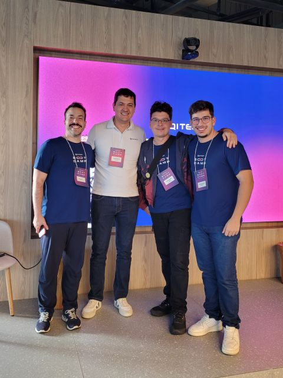
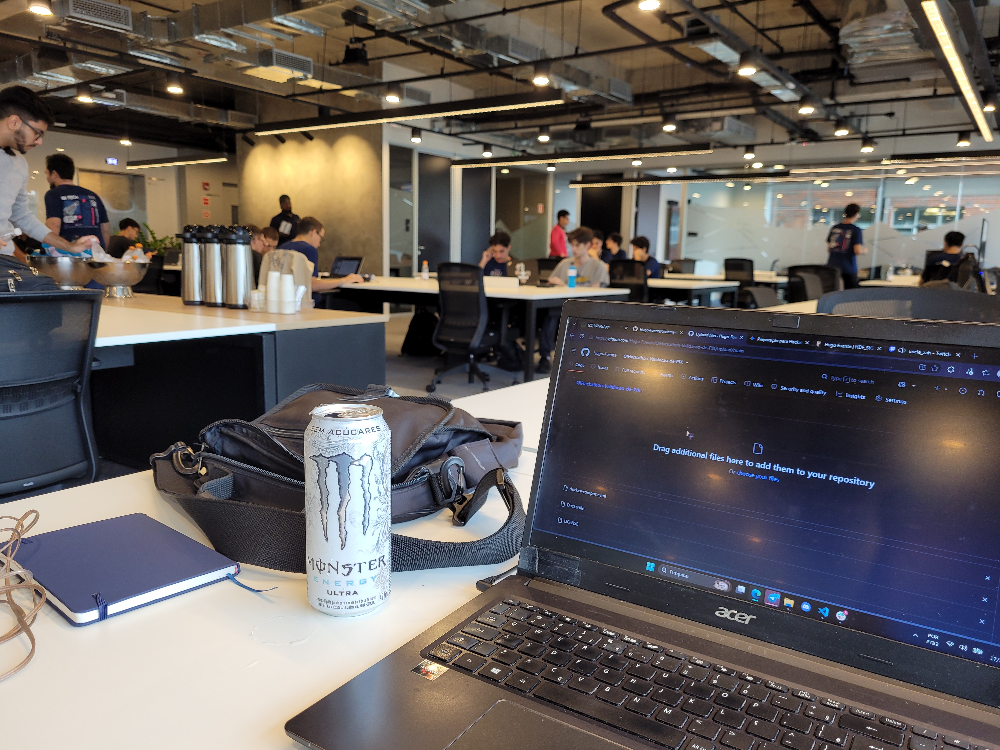

O Problema: Avaliar transações Pix complexas (incluindo contas corporativas de EPP com múltiplos sócios) em frações de segundo antes da liquidação, prevenindo fraudes externas e desvios internos sem gerar falsos positivos em operações legítimas (como folhas de pagamento e fornecedores).
A Solução & O Código: Desenvolvido em Python com FastAPI e PostgreSQL, o motor combina regras determinísticas puras desacopladas de persistência. Para garantir total consistência sob rajadas concorrentes, utilizamos pg_advisory_xact_lock no PostgreSQL serializando rajadas do mesmo pagador, garantindo leituras de histórico e acumulação de limites estritamente consistentes.


O motor opera avaliando dezenas de regras determinísticas (desde velocity checks até análise de desvio de perfil baseada na mediana do pagador). Cada decisão é totalmente reproduzível graças ao versionamento estrito de regras (rules_version e ruleset_hash) e ao armazenamento integral dos metadados de execução em camadas desacopladas (Resource, Controller, Repository).